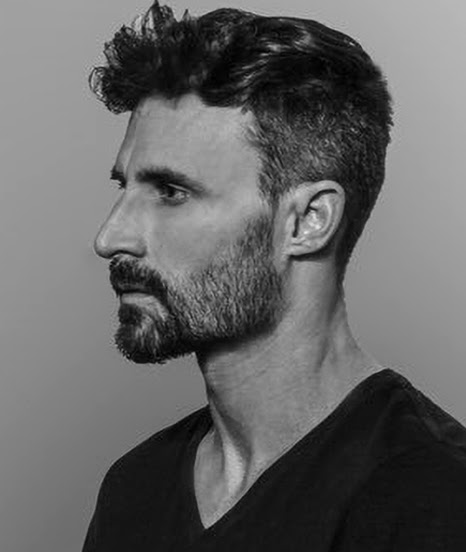

05
Chris Cuseo
Cuseo is a sculptor, painter and multi-faceted artist who studied design and film at UCLA. Mentored by Vasa Mihich and Frank Gehry, he has exhibited his work nationally and internationally since graduating in 2003.
His expertise in graphic design and animation — Photoshop, Z Brush, Maya, After Effects — has led to collaborations with top filmmakers, including the opening title sequences for She's Funny That Way and Billionaire Boys Club.
He also produces fashion films and commercials for clients such as AESOP.
Cuseo est sculpteur, peintre et artiste aux multiples facettes. Il a étudié le design à UCLA, où il s’est spécialisé dans les génériques de films.
Sa maîtrise du graphisme et de l’animation — Photoshop, ZBrush, Maya — nourrit une image dense, travaillée matière par matière.
Il réalise également des films de mode et des publicités, pour des clients comme AESOP.
- Studied
- UCLA, class of 2003
- Mentors
- Vasa Mihich, Frank Gehry
- Tools
- Photoshop, Z Brush, Maya, After Effects
- Clients
- AESOP